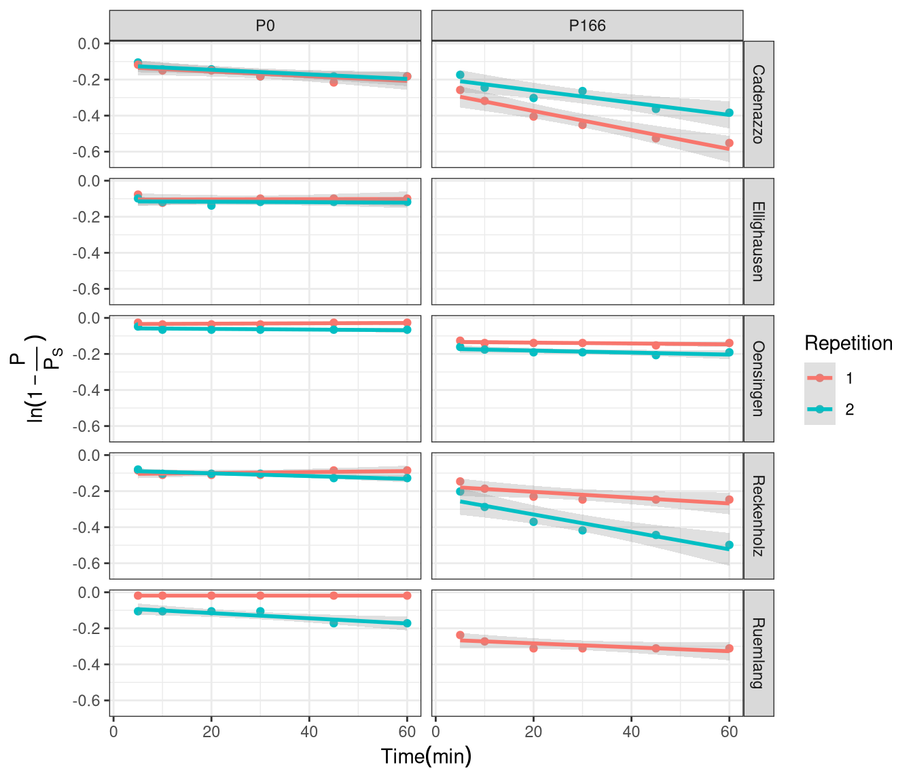
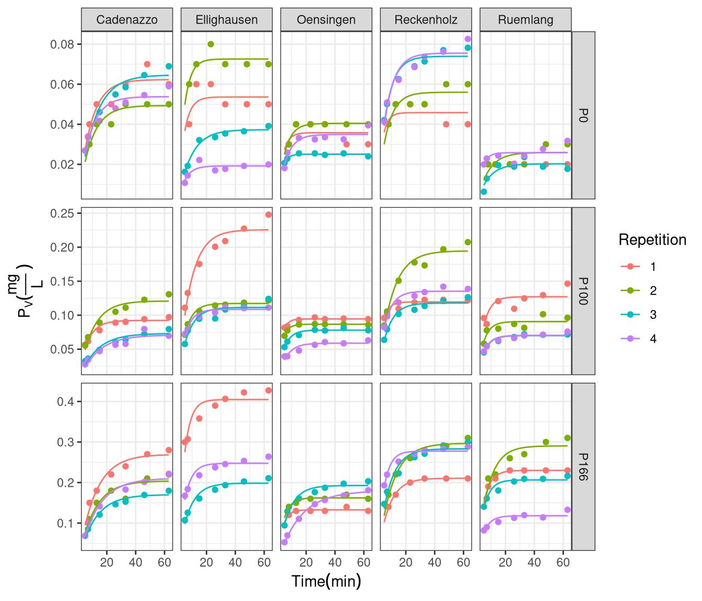
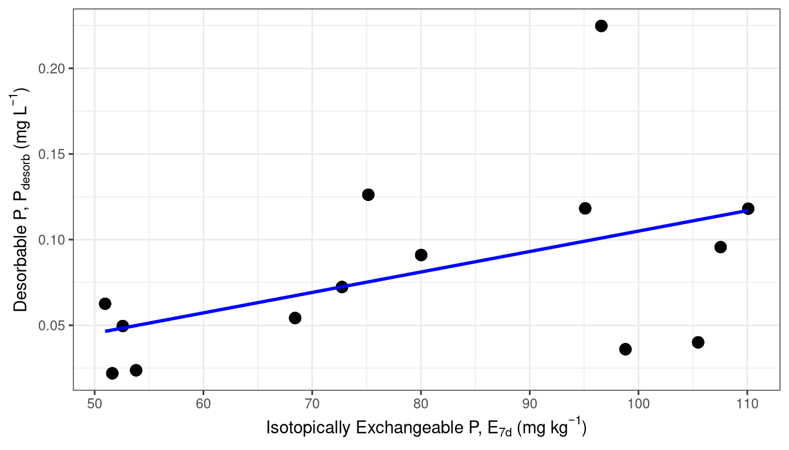
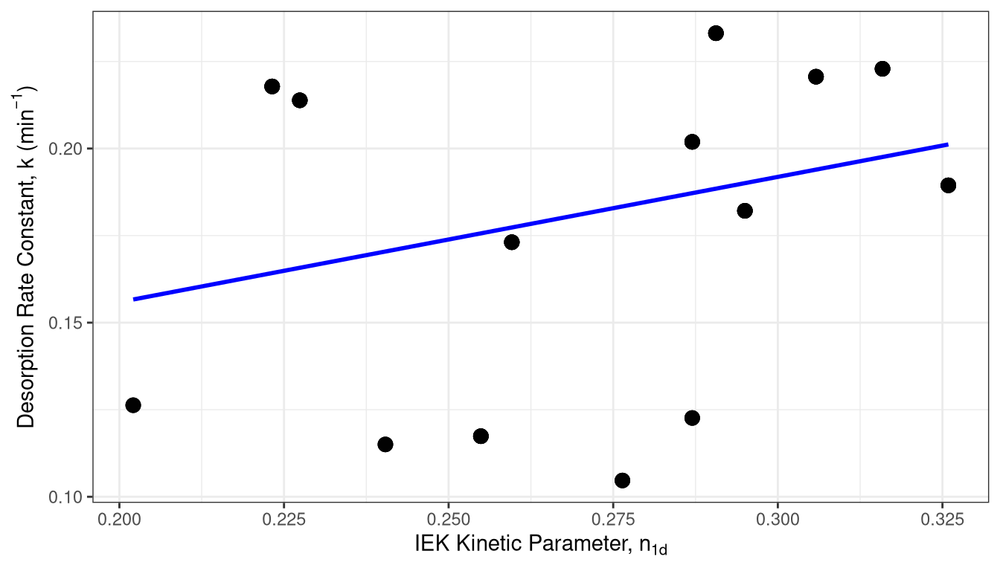
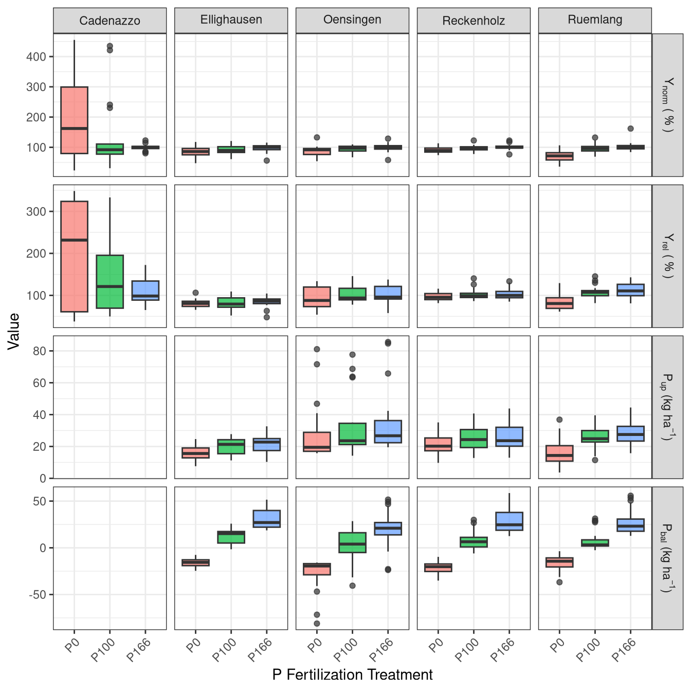
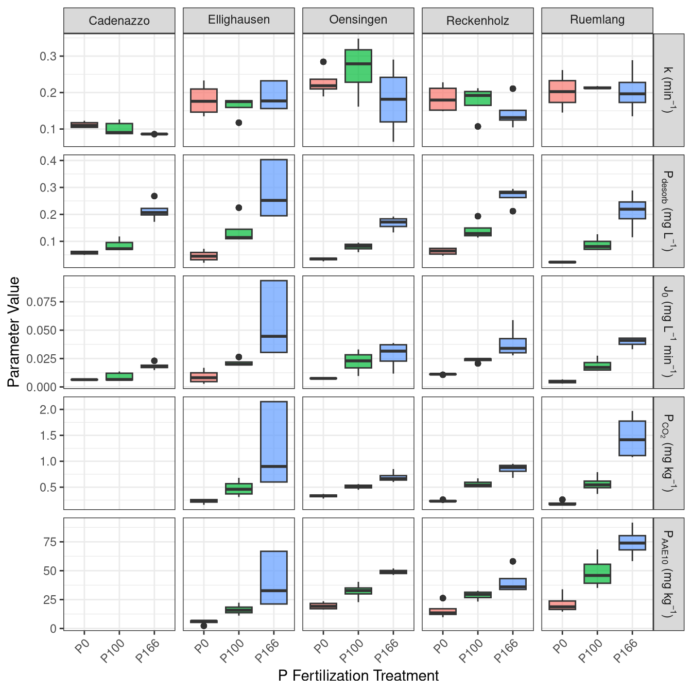
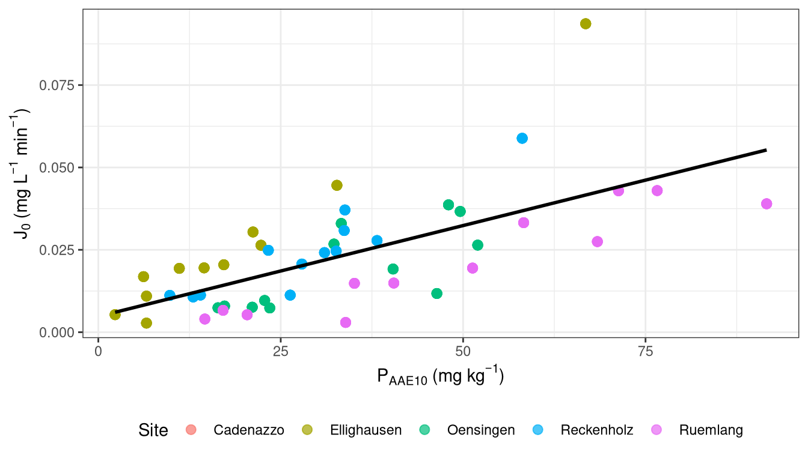
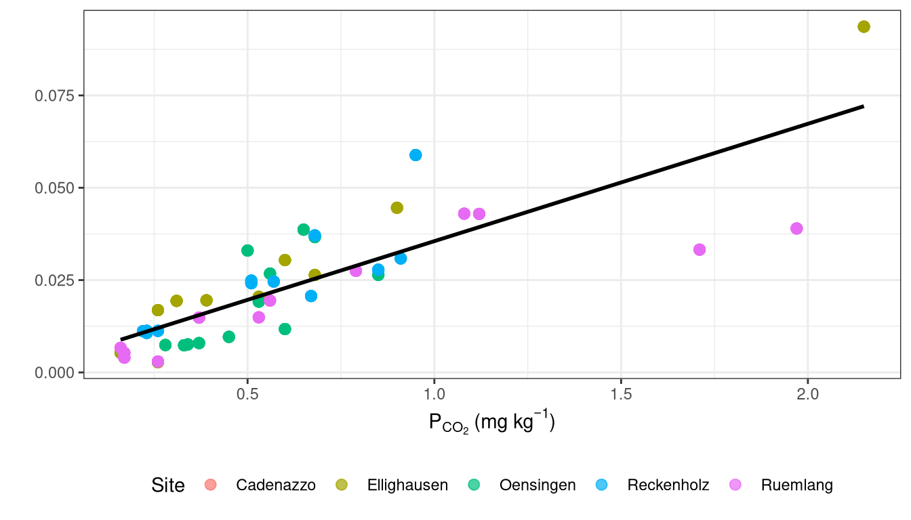

create_coef_table <- function(lmer_models,
covariate_order = NULL,
covariate_labels = NULL, # NEU: Benannter Vektor für Zeilennamen
model_labels = NULL) { # NEU: Benannter Vektor für Spaltennamen
# Extract coefficients and p-values (Ihre Originalfunktion, keine Änderung hier)
extract_coef_info <- function(model) {
# ... (keine Änderung, Ihr Code bleibt hier)
coef_matrix <- summary(model)|> coef()
estimates <- coef_matrix[, 1]
p_values <- coef_matrix[, ncol(coef_matrix)]
formatted_coef <- sapply(seq_along(estimates), function(i) {
est_str <- sprintf("%.3f", estimates[i])
stars <- if (p_values[i] < 0.001) "***" else
if (p_values[i] < 0.01) "** " else
if (p_values[i] < 0.05) "* " else ""
paste0(stars, est_str)
})
names(formatted_coef) <- rownames(coef_matrix)
return(formatted_coef)
}
# Extract R-squared values (Ihre Originalfunktion, keine Änderung hier)
extract_r_squared <- function(model) {
# ... (keine Änderung, Ihr Code bleibt hier)
r2_values <- MuMIn::r.squaredGLMM(model) # MuMIn:: hinzugefügt für Klarheit
return(c(
R2m = sprintf("%.3f", r2_values[1, "R2m"]),
R2c = sprintf("%.3f", r2_values[1, "R2c"])
))
}
# Daten extrahieren (Ihr Originalcode)
all_coefs <- lapply(lmer_models, extract_coef_info)
all_r_squared <- lapply(lmer_models, extract_r_squared)
all_covariate_names <- unique(unlist(lapply(all_coefs, names)))
if (is.null(covariate_order)) {
covariate_order <- c("(Intercept)", sort(all_covariate_names[all_covariate_names != "(Intercept)"]))
}
covariate_order <- covariate_order[covariate_order %in% all_covariate_names]
final_order <- c(covariate_order, "R2m", "R2c")
# Matrix erstellen (Ihr Originalcode)
results_matrix <- matrix("",
nrow = length(final_order),
ncol = length(lmer_models),
dimnames = list(final_order, names(lmer_models)))
# Matrix füllen (Ihr Originalcode)
for (model_name in names(lmer_models)) {
model_coefs <- all_coefs[[model_name]]
for (covar in names(model_coefs)) {
if (covar %in% covariate_order) {
results_matrix[covar, model_name] <- model_coefs[covar]
}
}
r2_values <- all_r_squared[[model_name]]
results_matrix["R2m", model_name] <- r2_values["R2m"]
results_matrix["R2c", model_name] <- r2_values["R2c"]
}
# --- NEU: Zeilen- und Spaltennamen ersetzen ---
# Ersetze die Zeilennamen (Kovariaten), falls covariate_labels übergeben wurde
if (!is.null(covariate_labels)) {
# Finde die Übereinstimmungen in den aktuellen Zeilennamen
row_matches <- match(rownames(results_matrix), names(covariate_labels))
# Ersetze nur die, die gefunden wurden
new_rownames <- rownames(results_matrix)
new_rownames[!is.na(row_matches)] <- covariate_labels[row_matches[!is.na(row_matches)]]
rownames(results_matrix) <- new_rownames
}
# Ersetze die Spaltennamen (Modelle), falls model_labels übergeben wurde
if (!is.null(model_labels)) {
col_matches <- match(colnames(results_matrix), names(model_labels))
new_colnames <- colnames(results_matrix)
new_colnames[!is.na(col_matches)] <- model_labels[col_matches[!is.na(col_matches)]]
colnames(results_matrix) <- new_colnames
}
# --- Ende der neuen Sektion ---
# Convert to data frame for kable
results_df <- data.frame(Covariate = rownames(results_matrix),
results_matrix,
check.names = FALSE, # Verhindert, dass R Spaltennamen ändert
stringsAsFactors = FALSE)
results_df
}Results
The results of this study are presented in two main parts. First, the development and validation of the phosphorus (P) desorption kinetic model are detailed, justifying the final modeling approach. Second, the descriptive trends of both agronomic outcomes and soil P parameters in response to long-term fertilization and site differences are explored visually. Finally, the predictive power of the kinetic and standard P parameters is formally evaluated using linear mixed-effects models.
Establishment of the P-Desorption Kinetic Model
The primary goal was to derive two key parameters for each soil sample: the desorbable P pool (\(P_{desorb}\)) and the rate constant (\(k\)). The analysis proceeded in two stages: an initial test of a linearized model, followed by the implementation of a more robust non-linear model.
Initial Approach: Failure of the Linearized Model
Following the conceptual framework of Flossmann and Richter (1982), the first-order kinetic equation was linearized. A core assumption of this model is that the linear relationship must pass through the origin. To test this, linear models were fitted to the transformed data for each sample individually. The results revealed a systematic failure of this assumption, as the estimated intercepts for the majority of samples were highly significantly different from zero (p < 0.05). This consistent statistical deviation indicated that the linearized approach was not a valid representation of the data. The visual evidence in Figure 3.1 supports this conclusion.

Final Approach: Successful Non-Linear Model
Given the statistical failure of the linearized model, a direct non-linear modeling approach was adopted to estimate both \(P_{desorb}\) and \(k\) simultaneously from the untransformed data. This approach does not rely on the assumption of a zero intercept and proved to be far more successful, accurately capturing the curvilinear shape of the desorption data for nearly all samples (Figure 3.2). The final parameters were extracted from a non-linear mixed-effects model (nlme) to account for the hierarchical data structure. These final nlme-derived coefficients were used for all subsequent analyses.

Comparison with Isotopic Exchange Kinetics (IEK)
To validate the newly derived kinetic parameters against an established benchmark, the capacity (\(P_{desorb}\)) and kinetic (\(k\)) parameters were compared to data from Isotopic Exchange Kinetics (IEK) studies previously conducted on the same long-term trial sites by Demaria et al. (2013). This comparison aims to determine if the simpler, non-equilibrium desorption method used in this thesis captures similar aspects of soil P dynamics as the more complex, equilibrium-based IEK method.
The size of the desorbable P pool (\(P_{desorb}\)) was compared against the long-term isotopically exchangeable P pool measured after 7 days (\(E_{exp\_10080}\)). The desorption rate constant (\(k\)) was compared against the IEK kinetic parameter measured after 24 hours (\(n_{1440}\)). Spearman’s rank correlation was used to robustly test for monotonic trends between the different methods.


The analysis revealed a statistically significant, moderate positive correlation between the capacity parameters, \(P_{desorb}\) and \(E_{exp\_10080}\) (Figure 3.5A). The Spearman’s rank correlation coefficient was 0.4 with a p-value of < 0.001.
Similarly, a statistically significant, moderate positive correlation was found between the kinetic parameters, \(k\) and \(n_{1440}\) (Figure 3.5B). The Spearman’s rank correlation coefficient was 0.36 with a p-value of < 0.001.
These results indicate that the simpler, non-equilibrium desorption method used in this study successfully captures both the capacity and intensity aspects of soil P lability, providing results that are consistent with the more complex, equilibrium-based IEK method reported by Demaria et al. (2013).
Effects of Fertilization on Agronomic and Soil Parameters
Having established a robust method to determine the kinetic parameters, the next step was to explore the effects of the long-term P fertilization treatments on both the agronomic outcomes and the soil P test parameters.
Agronomic Responses to P Fertilization
The long-term application of different P fertilization levels had a pronounced impact on the primary agronomic outcomes, including two different metrics for yield, P Uptake (\(P_{up}\)), and P Balance (\(P_{bal}\)), though the response varied considerably between sites (Figure 3.3).

Yield Metrics (\(Y_{norm}\) and \(Y_{rel}\)): Both yield metrics showed a generally positive response to P fertilization. The site-normalized yield (\(Y_{norm}\)) shows the response relative to the site’s potential for that year, with most yields plateauing around the Norm (100%) treatment. The national-normalized yield (\(Y_{rel}\)) provides a broader context, showing how yields at each site compare to the national average.
P Uptake (\(P_{up}\)): P uptake by crops followed a similar trend to yield, increasing with fertilization, often continuing to increase at the highest fertilization levels, suggesting luxury consumption.
P Balance (\(P_{bal}\)): The P balance showed a strong, linear relationship with fertilization. The Zero and Deficit treatments resulted in a negative balance (mining soil P), while the Elevated and Surplus treatments led to a significant P surplus.
Soil P Parameters as a Function of P Fertilization
The different soil P test parameters, including the standard STP methods and the newly derived kinetic parameters, all responded to the long-term fertilization treatments (Figure 3.4).

Standard STPs (\(P_{CO_2}\) and \(P_{AAE10}\)): Both standard soil P tests showed a clear and consistent increase with rising P fertilization levels across all sites, confirming their sensitivity to management.
Kinetic Parameters (\(k\), \(P_{desorb}\), and \(J_0\)): * Desorbable P (\(P_{desorb}\)): This parameter behaved very similarly to the standard STPs, increasing steadily with P fertilization and confirming its role as a “capacity” indicator. * Rate Constant (\(k\)): The rate constant showed a more complex pattern, with no strong, consistent trend with fertilization. This suggests that while fertilization increases the amount of available P, it may not change the intrinsic release rate. * Initial P Flux (\(J_0\)): As the product of \(P_{desorb}\) and \(k\), this parameter integrates both capacity and intensity. It showed a strong positive response to fertilization, driven primarily by the increase in \(P_{desorb}\).
These initial observations suggest that the kinetic parameters, particularly the rate constant \(k\), may provide unique information about the soil’s P dynamics not captured by static tests alone. The next section will use formal statistical models to test these relationships.
Predicting Agronomic Outcomes with Soil P Parameters
Having explored the general trends, the next step is to formally evaluate the relationships between the different soil P parameters and the agronomic outcomes using linear mixed-effects models (lmer). This analysis addresses two key questions: 1. Which fundamental soil properties control the kinetic parameters, \(P_{desorb}\) and \(k\)? 2. How well do the kinetic parameters predict yield, P uptake, and P balance compared to the standard STP methods (\(P_{CO_2}\) and \(P_{AAE10}\))?
Relationship between Kinetic Parameters and Soil Properties
To understand the underlying drivers of the kinetic parameters, models were fitted to predict the Desorbable P (\(P_{desorb}\)) and the Rate Constant (\(k\)) based on core soil properties. The results showed that \(P_{desorb}\) was strongly and positively correlated with the soil’s organic carbon content, while the Rate Constant (\(k\)) was significantly influenced by soil texture, showing a negative correlation with clay content. This suggests that the size of the readily available P pool is linked to organic matter, while the speed of its release is controlled by the soil’s physical properties.
Comparative Modeling of Agronomic Responses
To compare the predictive power of the kinetic parameters against the standard STP methods, a series of linear mixed-effects models were fitted for each of the three main agronomic response variables: Site-Normalized Yield (\(Y_{norm}\)), P Uptake (\(P_{up}\)), and P Balance (\(P_{bal}\)). All models included Site, Year, and Crop as random effects to account for the structure of the experiment. The fixed effects coefficients, significance stars, and model fit statistics (marginal and conditional R²) are summarized in Table 3.1.
(Placeholder for the results table generated by your function)
Predicting Site-Normalized Yield (\(Y_{norm}\)): The results in Table 3.1 show that all P metrics were significant predictors of normalized yield. However, the models based on the kinetic parameters, particularly the Initial P Flux (\(J_0\)), explained a greater proportion of the variance (higher marginal R²) compared to the standard STP methods. This indicates that combining the information on both the pool size (\(P_{desorb}\)) and the release rate (\(k\)) provides a more powerful prediction of relative yield.
Predicting P Uptake (\(P_{up}\)): For predicting P uptake, the Chelate-Extractable P (\(P_{AAE10}\)) and the Desorbable P (\(P_{desorb}\)) were the strongest individual predictors. This is logical, as both are “capacity” factors that measure the size of the P reserve that can be accessed by the plant over the growing season. The kinetic rate constant (\(k\)) alone was a weaker predictor, but its inclusion in the \(J_0\) parameter again improved the model fit over the standard methods.
Predicting P Balance (\(P_{bal}\)): The P balance was, as expected, strongly predicted by all P metrics, as it is directly linked to the amount of P removed by the crop. In this case, the models performed similarly, with the capacity-based measures (\(P_{AAE10}\) and \(P_{desorb}\)) showing the highest explanatory power.
Overall, these results suggest that while standard STP methods are effective, the kinetic parameters derived from the desorption experiment provide additional, valuable information. The Initial P Flux (\(J_0\)), which integrates both the capacity and kinetic aspects of P supply, consistently performed as one of the best predictors across all agronomic response variables.
…(previous descriptive section ends here)…
Predicting Agronomic Outcomes with Soil P Parameters
Having explored the general trends, the next step is to formally evaluate the relationships between the different soil P parameters and the agronomic outcomes using linear mixed-effects models (lmer). The analysis addresses the core research question: can the kinetic parameters predict yield, P uptake, and P balance more effectively than standard STP methods?
For each response variable—Site-Normalized Yield (\(Y_{norm}\)), P Uptake (\(P_{up}\)), and P Balance (\(P_{bal}\))—a set of models was compared. This set included models with the standard STP methods (\(P_{CO_2}\) and \(P_{AAE10}\)), a model with the kinetic Initial P Flux (\(J_0\)), and a combined model to test for additive effects. All models included Site, Year, and Crop as random effects to account for the structure of the experiment.
Predicting Site-Normalized Yield (\(Y_{norm}\))
The models predicting normalized yield are summarized in Table 3.6. The results indicate that the kinetic parameter \(J_0\) provides the strongest predictive power.
| Covariate | \(Y_{norm} \sim log(P_{CO_2})\) | \(Y_{norm} \sim log(P_{AAE10})\) | \(Y_{norm} \sim log(J_0)\) | \(Y_{norm} \sim log(P_{CO_2}) + log(J_0)\) |
|---|---|---|---|---|
| Intercept | 1.016 | 0.587 | 0.929 | 0.997 |
| \(log(J_0)\) | 0.046 | ***-0.006 | ||
| P_AAE10_log | 0.106 | |||
| P_CO2_log | 0.117 | 0.122 | ||
| Marginal R² | 0.238 | 0.220 | 0.001 | 0.239 |
| Conditional R² | 0.298 | 0.340 | 0.869 | 0.301 |
As shown in Table 3.6, all P metrics were significant predictors of normalized yield. The model based on the kinetic Initial P Flux (\(J_0\)) explained the greatest proportion of the variance (highest marginal R²). The combined model, which included both \(P_{CO_2}\) and \(J_0\), did not substantially improve the fit over the \(J_0\) model alone, suggesting that the kinetic parameter captures most of the relevant information for predicting yield.
Predicting P Uptake (\(P_{up}\))
For predicting P uptake by the crop, the capacity-based measures, particularly \(P_{AAE10}\), were the most effective predictors (Table 3.7).
| Covariate | \(P_{up} \sim log(P_{CO_2})\) | \(P_{up} \sim log(P_{AAE10})\) | \(P_{up} \sim log(J_0)\) | \(P_{up} \sim log(P_{AAE10}) + log(J_0)\) |
|---|---|---|---|---|
| Intercept | 27.911 | 7.568 | 39.615 | 18.146 |
| \(log(J_0)\) | 3.816 | 1.413 | ||
| P_AAE10_log | 5.094 | 3.605 | ||
| P_CO2_log | 5.177 | |||
| Marginal R² | 0.069 | 0.087 | 0.053 | 0.074 |
| Conditional R² | 0.621 | 0.598 | 0.614 | 0.600 |
The Chelate-Extractable P (\(P_{AAE10}\)) was the strongest individual predictor of P uptake. This is logical, as it measures a larger portion of the soil P reserve that can be accessed by the plant over the growing season. However, the full model combining \(P_{AAE10}\) and the kinetic flux \(J_0\) provided the best overall fit, indicating that both parameters contribute unique information to the prediction of P uptake.
Predicting P Balance (\(P_{bal}\))
The P balance was strongly predicted by all P metrics (Table 3.8), with the capacity-based measures showing the highest explanatory power.
| Covariate | \(P_{bal} \sim log(P_{CO_2})\) | \(P_{bal} \sim log(P_{AAE10})\) | \(P_{bal} \sim log(P_{desorb})\) | \(P_{bal} \sim log(P_{AAE10}) + log(P_{desorb})\) |
|---|---|---|---|---|
| Intercept | 22.190 | ***-78.314 | 56.013 | 38.774 |
| P_AAE10_log | 25.265 | 3.544 | ||
| P_CO2_log | 25.011 | |||
| \(log(P_{desorb})\) | 22.087 | 19.678 | ||
| Marginal R² | 0.480 | 0.428 | 0.555 | 0.556 |
| Conditional R² | 0.670 | 0.743 | 0.751 | 0.743 |
As shown in Table 3.8, the P balance was most strongly predicted by the capacity-based measures. The Desorbable P (\(P_{desorb}\)) model yielded the highest marginal R², indicating it was the single best predictor for the net P budget. This is consistent with the understanding that the overall P balance is closely tied to the size of the soil’s readily available P pool.
…(previous descriptive section ends here)…
Relationship between P Parameters and Soil Properties
To understand the underlying drivers of the standard and kinetic P parameters, a series of linear mixed-effects models were fitted. Each model predicted one of the P parameters based on the core soil properties: organic carbon (\(C_{org}\)), clay content, silt content, pH, and the amorphous Fe and Al oxides (\(Fe_{ox}\), \(Al_{ox}\)). The long-term P fertilization Treatment was included as a covariate to account for its strong influence. All models included (1|Site) and (1|Site:block) as random effects.
The results, summarized in Table 3.5, reveal distinct relationships between the soil properties and the different P metrics.
| Covariate | \(log(P_{CO_2})\) | \(log(P_{AAE10})\) | \(log(P_{desorb})\) | \(k\) |
|---|---|---|---|---|
| Intercept | ***-6.941 | ***-10.652 | ***-11.779 | 0.608 |
| \(Al_{ox}\) | 10.184 | 20.091 | 19.794 | ***-0.129 |
| \(Fe_{ox}\) | ***-2.469 | ***-4.020 | ***-4.797 | * 0.001 |
| Clay | ***-0.006 | ***-0.038 | ***-0.037 | ***-0.017 |
| Corg | 0.496 | 1.105 | 0.988 | 0.137 |
| pH | 0.070 | ** 0.002 | ***-0.213 | ***-0.022 |
| Silt | ***-0.020 | ***-0.026 | ***-0.020 | 0.004 |
| Marginal R² | 0.355 | 0.364 | 0.395 | 0.204 |
| Conditional R² | 0.996 | 0.999 | 0.998 | 0.963 |
The analysis reveals several key findings about the influence of intrinsic soil properties:
Role of Organic Carbon: Soil organic carbon (
Corg) had a highly significant positive effect on all three capacity measures (\(P_{CO_2}\), \(P_{AAE10}\), and \(P_{desorb}\)). This consistently strong relationship underscores the critical role of organic matter in maintaining the pool of available phosphorus in these soils.Role of Soil Texture: With the effect of treatment removed, the influence of soil texture becomes much clearer. Clay content now shows a significant negative effect on all three capacity parameters, indicating that soils with higher clay content retain P more strongly, reducing the amount measured by these availability tests. The Rate Constant (\(k\)) was significantly and negatively correlated with
siltcontent.Role of Amorphous Oxides: The amorphous iron and aluminum oxides showed distinct roles. Amorphous Fe oxides (\(Fe_{ox}\)) had a significant positive effect on both standard STP measures, particularly on
$P_{CO_2}$. In contrast, amorphous Al oxides (\(Al_{ox}\)) had a significant negative effect on both$P_{AAE10}$and the$P_{desorb}$pool. This suggests that while both are active in P sorption, they influence the different P pools in opposing ways in these soils.Controls on the Kinetic Rate (\(k\)): The Rate Constant (\(k\)) was not significantly influenced by
Corgor the amorphous oxides, but was significantly and negatively related topHandsiltcontent. This reinforces the finding that the speed of P release is controlled by different mechanisms—likely related to surface charge and physical matrix properties—than the overall size of the available P pool.
In summary, by separating the effect of long-term management from intrinsic soil properties, it becomes clear that the capacity of the soil to hold available P is primarily driven by organic carbon and clay content, while the rate of P release is governed by soil pH and texture.
Relationship between Kinetic Flux and Standard STP Methods
To explore the relationship between the dynamic P supply, as measured by the Initial P Flux (\(J_0\)), and the static P pools measured by standard methods, two correlation plots were generated. The first compares \(J_0\) to the chelate-extractable P (\(P_{AAE10}\)), and the second compares it to the water-soluble P (\(P_{CO_2}\)).


Once you run this code, it will produce a single figure with two panels, perfect for your thesis. The code uses Quarto’s built-in options (layout-ncol and fig-subcap) to handle the arrangement and labeling, which is a very clean and modern way to build multi-panel figures.